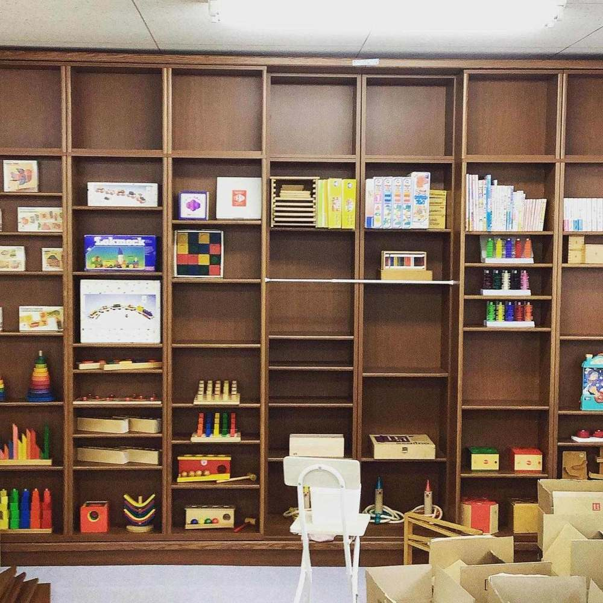
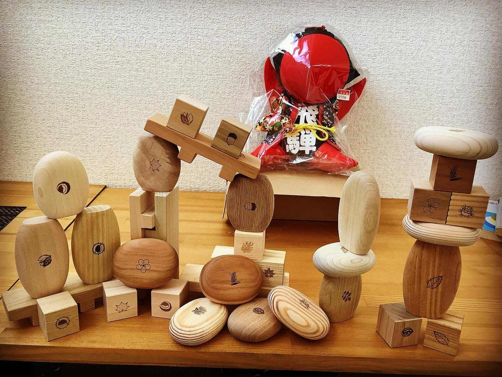
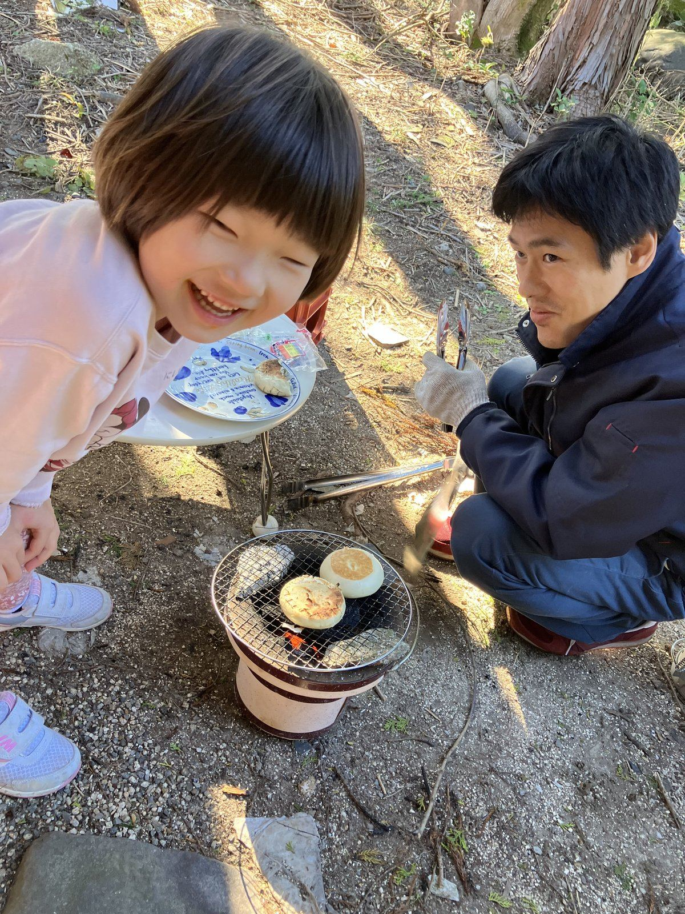
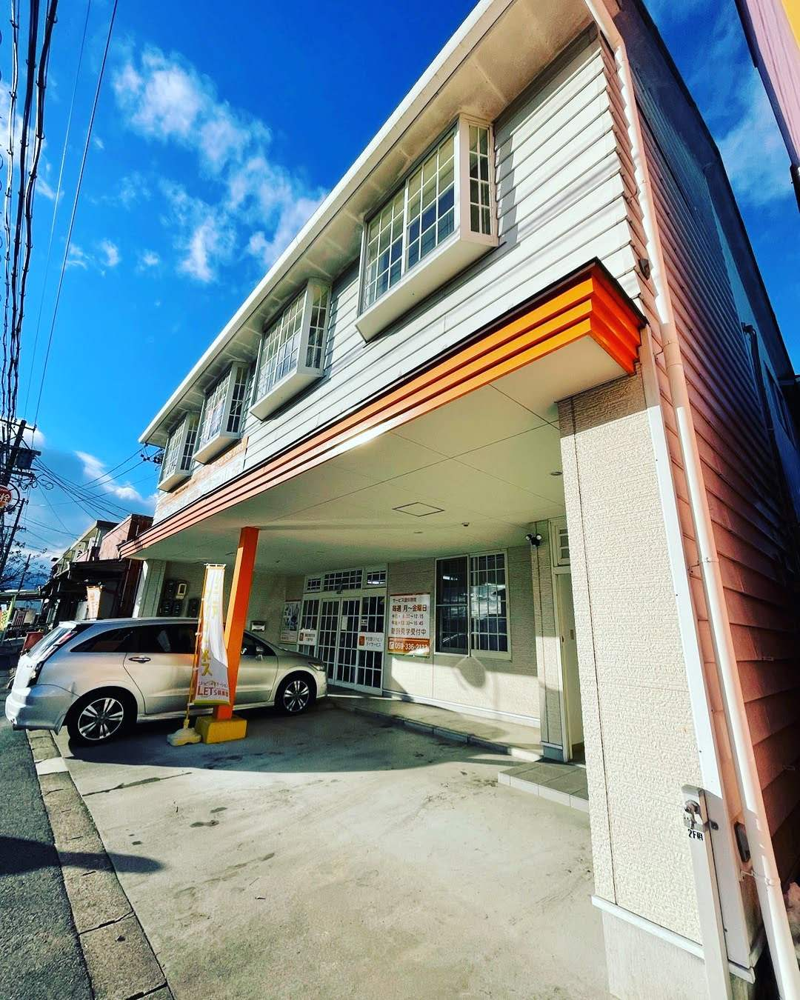

日常生活に必要な動作の指導をしたり、人や物を通して情緒の安定を丁寧に図ります。
落ち着きがない、こだわりが強い、集団が苦手なお子さま。医師の診断の有無は問いません。お子さま一人ひとりの安心できる居場所を作ります。
※地域によって送迎のご相談も承ります。
FEATURES
レオの療育の特徴

好きを見つけ、チャレンジする
たくさんのおもちゃの中から自分の好きなものを見つけたり、スタッフと一緒に少し難しい課題にも挑戦。「認知・行動」「言語・コミュニケーション」「社会性」を育みます。

武道・ヨガ・農作業で心身を鍛える
格闘家や農家さんのもとへ赴く地域連携を実施。「健康・生活」「運動・感覚」を刺激し、身体を動かす楽しさと情緒の安定を両立させます。

自然観察とアウトドア体験
菰野町のフィールドにお出かけして、遊びながら自然観察をしたり、七輪で火起こしに挑戦。五感を使った本物の体験を大切にしています。

家族支援・進路相談（移行支援）
経験豊富な専門スタッフが保護者の方の相談に寄り添い、職員の指導力向上にも尽力。建物の2階、看板のあるドアから気軽にお入りいただけます。
SUPPORT FOR PARENTS
保護者向け専門プログラム
INFORMATION
開所時間・場所
- 時間
- 【1部】11:00 ～ 14:30
【2部】放課後 ～ 17:00 - 対象年齢
- 満1歳 ～ 18歳（主に発達が気になるお子様）
- 場所
- 三重県四日市市あさけが丘2-1-42 2F
三岐線 山城駅 徒歩12分（名古屋西ICから車で約30分） - 費用
- 公的制度の利用可能（受給者証などの申請手続きはこちらで案内します）